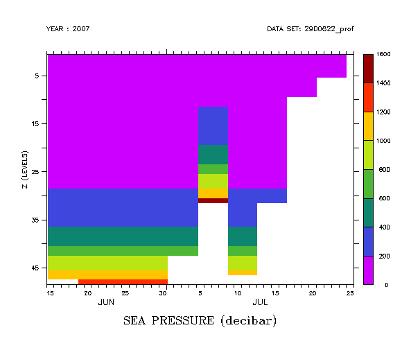
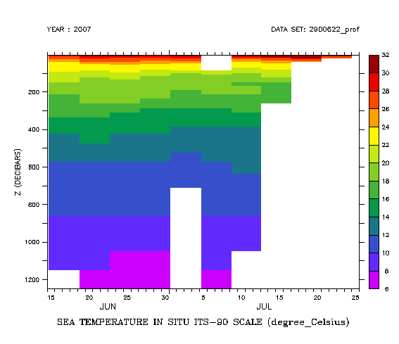

FAQ
How can I work with ARGO float profile data?
How can I work with ARGO float profile data?
Working with ARGO float data
Question:
How can I work with data from the USGODAE Argo GDAC Data Browser (obtained from usgodae.org)
Example:
Upon opening a file from this source, the data which should be on axes of Z(levels) and T(days) instead appears to be on an XY axis. For instance, looking at a temperature variable:
yes? USE argo2900623_prof.nc yes? SHOW GRID temp GRID GAI4 name axis # pts start end N_LEVELS X 48 r 1 48 N_PROF Y 35 r 1 35 normal Z normal T
The files contain a variable JULD, giving the time steps in days, and also a variable PRES. We would like to create a pressure axis and replace Z levels with pressure in decibars.
Explanation:
The file opens with N_LEVELS as an X axis and N_PROF as Y axes because the attributes in the file don't tell Ferret what direction the axes are, so it just takes them in the order they appear. We can use Ferret commands define new axes with the correct direction and units. We can also make use of ZAXREPLACE function to convert from levels to pressure units in the Z direction.
Solution:
Tell Ferret the order of axes to use via the /ORDER qualifier on the USE command:
yes? USE/ORDER=ZT argo2900623_prof.nc
To change from N_PROF to a time axis based on the data, let's look at the variable JULD, in particular its units attribute. Define an axis based on the values in JULD. (Note that sometimes in-situ data such as this may be disordered in time. If that were the case, we could use SORT and SAMPLE functions to reorder theJULD data, applying the same SAMPLE call to the data fields as well.)
yes? SHOW ATTRIBUTE/ALL juld attributes for dataset: /home/porter/ansley/ans_ferret/users/ansley/2900622_prof.nc JULD.long_name = Julian day (UTC) of the station relative to REFERENCE_DATE_TIME JULD.units = days since 1950-01-01 00:00:00 UTC JULD.conventions = Relative julian days with decimal part (as parts of day) JULD._FillValue = 999999 yes? DEFINE AXIS/T/T0="1-JAN-1950:00:00"/UNITS=days tday=juld
Now define a Z axis with units of levels. Make sure it's a DEPTH axis (increasing downwards).
yes? LET zz=Z[GZ=temp] yes? DEFINE AXIS/Z/UNITS=levels/DEPTH zlev=zz
Define new TEMPERATURE and PRESSURE variables, on the new ZT grid. (The syntax `temp,R=units` is short for `temp, RETURN=units`. These definitions keep the units, title, and missing-value flag from the originalvariable.)
! Put the temperature and pressure on this corrected ZT grid yes? CANCEL MODE depth_label ! changes label on vertical axis from DEPTH to just Z yes? LET/UNITS="`temp,R=units`"/TITLE="`temp,R=title`"/BAD=`temp,R=bad` \ temperature=temp[GZ=zlev@ASN,GT=tday@ASN] yes? shade temperature yes? LET/UNITS="`pres,R=units`"/TITLE="`pres,R=title`"/BAD=`pres,R=bad` \ pressure=pres[GZ=zlev@@ASN,GT=tday@ASN] yes? SHADE pressure

Now the temperature data has the right time axis, but notice how the missing data for a given profile is always at shifted to the end (deepest levels) of each profile (z), and for one time, the topmost (red) values are missing. Here is the equivalent plot for pressure, showing the same kind of behavior with missing data:

Now we want to put temperature on a pressure axis. The ZAXREPLACE function in Ferret is designed to do exactly this, and it will deal with the missing data we see in the above plots.
yes? SHOW FUNCTION zaxreplace ZAXREPLACE(V,ZVALS,ZAX) regrid V onto Z axis of ZAX based upon Z values in ZVALS using linear interpolation V: variable on native Z axis ZVALS: Z-value field corresponding to data points of V ZAX: variable with desired Z (depth) axis points
For our purposes, the first argument is temperature, the second is pressure, and we need to define an axis for the third argument which will be the pressure axis of the result. This can be any axis you want - perhaps you wish to compare this data with other data on a pressure axis. If so, use the pressure axis from that other data:
yes? USE my_other_data yes? SHOW GRID variable GRID GOJ1 name axis # pts start end normal Z normal Z ZPRESSURE DEPTH (decibars) 29 i- 0 1000 normal Z yes? CANCEL DATA my_other_data
After the CANCEL DATA, the axis ZPRESSURE will still be defined, and you can use it in the call to ZAXREPLACE.
Or, to get an idea of the pressures in this data, list some pressure data, and use its general pattern to define our own pressure axis,
yes? LIST/L=1 pressure
VARIABLE : SEA PRESSURE (decibar)
FILENAME : 2900622_prof.nc
FILEPATH : /home/porter/ansley/ans_ferret/users/ansley/
SUBSET : 48 points (Z)
T : 1
1 / 1: 5.
2 / 2: 10.
3 / 3: 15.
4 / 4: 19.
5 / 5: 25.
6 / 6: 30.
7 / 7: 34.
8 / 8: 40.
9 / 9: 45.
10 / 10: 50.
11 / 11: 55.
12 / 12: 59.
13 / 13: 64.
14 / 14: 69.
15 / 15: 74.
16 / 16: 80.
17 / 17: 84.
18 / 18: 90.
19 / 19: 94.
20 / 20: 100.
21 / 21: 104.
22 / 22: 110.
23 / 23: 120.
24 / 24: 129.
25 / 25: 140.
26 / 26: 159.
27 / 27: 179.
28 / 28: 200.
29 / 29: 224.
30 / 30: 249.
31 / 31: 274.
32 / 32: 299.
33 / 33: 324.
34 / 34: 350.
35 / 35: 374.
36 / 36: 399.
37 / 37: 450.
38 / 38: 499.
39 / 39: 549.
40 / 40: 599.
41 / 41: 674.
42 / 42: 750.
43 / 43: 824.
44 / 44: 899.
45 / 45: 999.
46 / 46: 1099.
47 / 47: 1196.
! Define an axis from a list of data that we just type in:
yes? DEFINE AXIS/Z/UNITS=decibars/DEPTH zpres= {5.,10.,15.,20.,25.,30.,34.,40.,\
45.,50.,55.,60.,65.,70.,75.,80.,85.,90.,95.,100.,105.,110.,120.,130.,\
140.,160.,180.,200.,225.,250.,275.,300.,325.,350.,375.,400.,450.,500.,\
550.,600.,675.,750.,825.,900.,1000.,1100.,1200.}
Now, with one or the other of these kinds of axis definitions, define the temperature variable on the pressure axis, and plot the regridded variable.
yes? LET/UNITS="`temperature,R=units`"/TITLE="`temperature,R=title`" \ temp_on_pres=ZAXREPLACE(temperature,pressure,Z[GZ=zpres]) yes? SHADE temp_on_pres

Now the temperature data is on the pressure-time grid. Save it to a netCDF file, and the axes we defined and the regridded variable are saved for another session.
Here is the entire script used here, generalized to open a specified dataset and apply the transformation to some specified variable in place of temperature. This script will be made available in the next release of Ferret.
! argo_zt.jnl
!
! Description:
! For an ARGO float data file from http://www.usgodae.org/cgi-bin/argo_select.pl .
! open the data, change the order of the axes, and define a time axis and levels
! axis; regrid pressure and temp or other fields of interest to this ZT grid.
! Call ZAXREPLACE to put the temperature or other field onto a pressure axis in Z
!
! arg 1 arg 2 arg 3
! usage: GO argo_zt filename variable[temp] [pressure-axis]
!
! If argument 3 is not given then a pressure-axis is defined in this script
!
! Examples:
! yes? go argo_zt 2900622_prof.nc temp
!
! yes? define axis/z/units=decibars/depth z7 = {5,100,200,300,400,800,1200}
! yes? go argo_zt 900622_prof.nc psal z7
!
!
CANCEL DATA/ALL
CAN MODE logo
CANCEL MODE depth_label ! changes label on vertical axis from DEPTH to just Z
SET WINDOW/SIZ=0.6
USE/ORDER=ZT $1
DEFINE SYMBOL data_var = ($2"temp")
! Define a time axis based on JULD
SHOW ATT/ALL juld
DEF AXIS/T/T0="1-JAN-1950:00:00"/UNITS=days tday=juld
LET zz=Z[GZ=($data_var)]
DEF AXIS/Z/UNITS=levels/DEPTH zlev=zz
! Put the variable and pressure on this corrected time-layer grid
LET/UNITS="`pres,R=units`"/TITLE="`pres,R=title`"/BAD=`pres,R=bad` \
pressure=pres[gz=zlev@asn,gt=tday@asn]
LET/UNITS="`($data_var),R=units`"/TITLE="`($data_var),R=title`"/BAD=`($data_var),R=bad` \
($data_var)_zt=($data_var)[gz=zlev@asn,gt=tday@asn]
SET VIEW ul
SHADE pressure
SET VIEW ll
SHADE ($data_var)_zt
! Define an output Z axis with units of pressure
IF ($3"0|*>1") THEN
DEFINE SYMBOL press_ax = ($3)
ELSE
DEFINE SYMBOL press_ax = zpres
DEFINE AXIS/Z/UNITS=decibars/DEPTH zpres= {5.,10.,15.,20.,25.,30.,34.,40.\
,45.,50.,55.,60.,65.,70.,75.,80.,85.,90.,95.,100.,105.,110.,120.,130.,\
140.,160.,180.,200.,225.,250.,275.,300.,325.,350.,375.,400.,450.,500.,\
550.,600.,675.,750.,825.,900.,1000.,1100.,1200.}
ENDIF
! Call zaxreplace to put the variable on this new pressure axis
LET/UNITS="`($data_var)_zt,R=units`"/TITLE="`($data_var)_zt,R=title`" \
var_on_pres = ZAXREPLACE(($data_var)_zt,pressure,Z[GZ=($press_ax)])
SET VIEW ur
SHADE var_on_pres